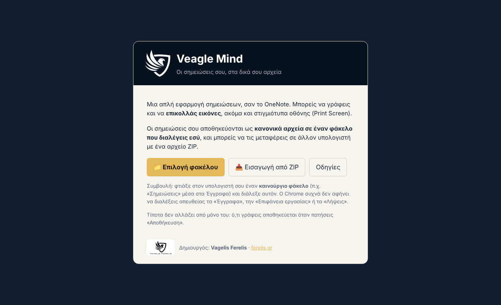
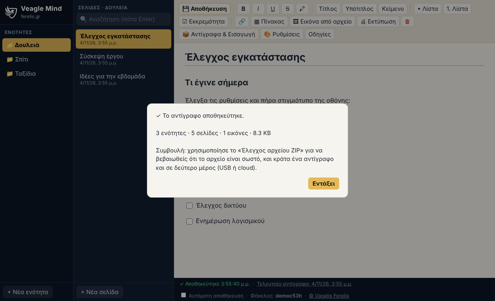

Οδηγίες εγκατάστασης και χρήσης
Γραμμένο για να το ακολουθήσεις και χωρίς γνώσεις πληροφορικής. Κάθε βήμα είναι μικρό και ξεκάθαρο.

Τι χρειάζεσαι
- Έναν υπολογιστή (Windows, Mac ή Linux).
- Τον browser Google Chrome ή Microsoft Edge. Στον Firefox και στο Safari η εφαρμογή δεν δουλεύει, γιατί δεν επιτρέπουν σε μια σελίδα να γράφει αρχεία στον φάκελό σου.
- Το αρχείο
app.html. Αυτό είναι όλη η εφαρμογή.
Εγκατάσταση βήμα βήμα
- Φτιάξε ένα φάκελο για την εφαρμογή. Για παράδειγμα, μέσα στα Έγγραφα φτιάξε φάκελο
Σημειώσεις-εφαρμογή. (Δεξί κλικ → Νέο → Φάκελος.) - Βάλε μέσα το αρχείο
app.html. Αν έχεις και τα αρχείαindex.html,odigies.htmlκαι τον φάκελοassets(αυτή τη σελίδα), βάλε τα όλα μαζί. - Άνοιξε το
app.htmlμε διπλό κλικ. Αν δεν ανοίξει με Chrome ή Edge: δεξί κλικ στο αρχείο → «Άνοιγμα με» → διάλεξε Google Chrome ή Microsoft Edge. - Θα δεις την αρχική οθόνη. Συνέχισε στο επόμενο κεφάλαιο.

Η αρχική οθόνη, την πρώτη φορά που ανοίγεις την εφαρμογή.
Πρώτη εκκίνηση: διάλεξε πού θα μένουν οι σημειώσεις
- Φτιάξε έναν άδειο φάκελο για τις σημειώσεις, ξεχωριστό από τον φάκελο της εφαρμογής. Για παράδειγμα
Έγγραφα\Σημειώσεις. - Στην εφαρμογή πάτα «📁 Επιλογή φακέλου» και διάλεξε αυτόν τον φάκελο.
- Ο browser θα ρωτήσει αν επιτρέπεις στη σελίδα να βλέπει και να αλλάζει αρχεία σε αυτόν τον φάκελο. Πάτα «Προβολή αρχείων» και μετά «Αποθήκευση αλλαγών» (ή «Επιτρέπεται»). Χωρίς αυτή την άδεια δεν μπορεί να σώσει τις σημειώσεις.
- Πάτα «+ Νέα ενότητα», γράψε ένα όνομα (π.χ. Δουλειά) και μετά «+ Νέα σελίδα».
Σημειώσεις) και διάλεξε αυτόν.Συντόμευση για εύκολο άνοιγμα
Διάλεξε όποιον τρόπο σου αρέσει:
- Σελιδοδείκτης: με την εφαρμογή ανοιχτή πάτα Ctrl+D και μετά «Τέλος». Την βρίσκεις στη γραμμή σελιδοδεικτών.
- Συντόμευση στην Επιφάνεια εργασίας (Windows): δεξί κλικ στο
app.html→ «Αποστολή προς» → «Επιφάνεια εργασίας (δημιουργία συντόμευσης)». Για να ανοίγει πάντα με Chrome ή Edge, κάνε δεξί κλικ στο αρχείο → «Άνοιγμα με» → «Επιλογή άλλης εφαρμογής» → διάλεξε τον browser και τσέκαρε «Να χρησιμοποιείται πάντα». - Καρφίτσωμα στη γραμμή εργασιών: σύρε τη συντόμευση της Επιφάνειας εργασίας πάνω στη γραμμή εργασιών (ανάλογα με την έκδοση Windows).
Ενημέρωση και απεγκατάσταση
- Ενημέρωση σε νέα έκδοση: αντικατέστησε το αρχείο
app.htmlμε το νέο. Οι σημειώσεις σου δεν επηρεάζονται, γιατί είναι σε άλλον φάκελο. - Απεγκατάσταση: σβήσε το αρχείο της εφαρμογής. Ο φάκελος με τις σημειώσεις μένει όπως είναι και μπορείς να τον κρατήσεις ή να τον σβήσεις μόνος σου.
Ενότητες και σελίδες
Σκέψου ένα ντοσιέ με χωρίσματα: κάθε ενότητα είναι ένα χώρισμα (π.χ. «Δουλειά», «Σπίτι», «Ταξίδια») και κάθε σελίδα ένα φύλλο μέσα του.
- Νέα ενότητα: κουμπί «+ Νέα ενότητα» κάτω αριστερά.
- Νέα σελίδα: κουμπί «+ Νέα σελίδα» στη δεύτερη στήλη. Γράψε πρώτα τίτλο και μετά πάτα «Αποθήκευση». Ο τίτλος γίνεται και το όνομα του αρχείου.
- Μετονομασία σελίδας: άλλαξε τον τίτλο και πάτα «Αποθήκευση».
- Μετονομασία ή διαγραφή ενότητας: γίνεται από τον Εξερευνητή αρχείων (κάθε ενότητα είναι ένας φάκελος). Μετά, στην εφαρμογή, άνοιξε ξανά τον φάκελο.
- Οι σελίδες εμφανίζονται με πρώτες τις πιο πρόσφατες.
Γράψιμο και μορφοποίηση
Κάνε κλικ στο κενό και γράψε. Η μπάρα εργαλείων πάνω δίνει:
| Κουμπί | Τι κάνει |
|---|---|
| B I U | Έντονα, πλάγια, υπογραμμισμένο, διαγραμμένο (επίλεξε πρώτα το κείμενο) |
| 🖍 | Κίτρινος μαρκαδόρος |
| Τίτλος / Υπότιτλος / Κείμενο | Αλλάζει το μέγεθος της γραμμής όπου βρίσκεσαι |
| • Λίστα / 1. Λίστα | Λίστα με κουκκίδες ή αριθμημένη |
| ☑ Εκκρεμότητα | Κουτάκι που τικάρεις όταν τελειώσεις κάτι. Πάτα Αποθήκευση για να μείνει τικαρισμένο. |
| 🔗 | Σύνδεσμος: επίλεξε κείμενο, πάτα το κουμπί και γράψε τη διεύθυνση. Για να τον ανοίξεις πάτα Ctrl και κλικ. |
| ▦ Πίνακας | Βάζει πίνακα 3×3. Κάνε κλικ σε κάθε κελί για να γράψεις. |
Επικόλληση κειμένου από αλλού (Word, ιστοσελίδες): η εφαρμογή κρατά τη δομή (έντονα, λίστες, πίνακες) αλλά αφαιρεί τα περίεργα χρώματα και γραμματοσειρές, ώστε να μένουν καθαρές οι σελίδες.
Εικόνες και Print Screen
Αυτό είναι το πιο σημαντικό σημείο της εφαρμογής.
Βήμα 1. Τράβα τη φωτογραφία της οθόνης
| Σύστημα | Πλήκτρα | Τι αντιγράφεται |
|---|---|---|
| Windows | Print Screen (ή PrtSc) | Όλη η οθόνη |
| Windows | Alt+Print Screen | Μόνο το παράθυρο που είναι μπροστά |
| Windows 10/11 | Win+Shift+S | Διαλέγεις εσύ την περιοχή με το ποντίκι |
| Mac | Control+Cmd+Shift+4 | Διαλέγεις περιοχή και αντιγράφεται στο πρόχειρο |
Βήμα 2. Επικόλλησέ την
Άνοιξε μια σελίδα στο Veagle Notes, κάνε κλικ εκεί που θέλεις την εικόνα και πάτα Ctrl+V (στο Mac Cmd+V). Η εικόνα εμφανίζεται αμέσως.
Μπορείς επίσης να: σύρεις ένα αρχείο εικόνας μέσα στη σελίδα, να αντιγράψεις μια εικόνα από άλλο πρόγραμμα ή ιστοσελίδα και να την επικολλήσεις, ή να πατήσεις «🖼 Εικόνα από αρχείο».
Βήμα 3. Μέγεθος και αφαίρεση
Κάνε κλικ πάνω στην εικόνα. Εμφανίζονται κουμπιά: Μικρή, Μεσαία, Μεγάλη, Πλήρης, Αρχικό μέγεθος, Αφαίρεση. Με διπλό κλικ πάνω της, ανοίγει μεγάλη σε όλη την οθόνη.

img-20261104-102453-1.png) στον φάκελο _images της ενότητας. Μέχρι τότε βρίσκεται μόνο στη σελίδα που βλέπεις.Αποθήκευση
- Πάτα «💾 Αποθήκευση» ή Ctrl+S.
- Κάτω αριστερά βλέπεις την κατάσταση: ● Μη αποθηκευμένες αλλαγές σημαίνει ότι δεν έχει σωθεί ακόμα, και ✓ Αποθηκεύτηκε ότι όλα είναι εντάξει.
- Αν προσπαθήσεις να φύγεις ή να αλλάξεις σελίδα χωρίς να σώσεις, η εφαρμογή σε ρωτά τι θέλεις να κάνεις.
- Αυτόματη αποθήκευση (προαιρετική): κάτω δεξιά υπάρχει τετράγωνο «Αυτόματη αποθήκευση». Είναι κλειστό από την αρχή. Αν το ενεργοποιήσεις (θα σε ρωτήσει πρώτα), η σελίδα αποθηκεύεται μόνη της 3 δευτερόλεπτα αφού σταματήσεις να γράφεις.
Αναζήτηση
Γράψε μια λέξη στο πλαίσιο «🔍 Αναζήτηση» και πάτα Enter. Η εφαρμογή ψάχνει στους τίτλους και στο κείμενο όλων των ενοτήτων. Κάνε κλικ σε ένα αποτέλεσμα για να το ανοίξεις. Για να κλείσεις την αναζήτηση, πάτα «✕ Κλείσιμο αναζήτησης» ή Esc.
Η αναζήτηση βρίσκει κείμενο, όχι το περιεχόμενο των εικόνων.
Διαγραφή και φάκελος _trash
Το κουμπί 🗑 διαγράφει την τρέχουσα σελίδα, αφού ζητήσει επιβεβαίωση. Η σελίδα δεν χάνεται οριστικά: το αρχείο της μπαίνει στον υποφάκελο _trash της ενότητας. Για να την επαναφέρεις, μετέφερε το αρχείο της πίσω στον φάκελο της ενότητας από τον Εξερευνητή αρχείων.
Εκτύπωση ή αποθήκευση σε PDF
Άνοιξε τη σελίδα και πάτα «🖨 Εκτύπωση». Στο παράθυρο που εμφανίζεται, διάλεξε εκτυπωτή ή «Αποθήκευση ως PDF».
Ρυθμίσεις χρώματος
Αν θέλεις να αλλάξεις την εμφάνιση, πάτα το κουμπί 🎨 Ρυθμίσεις στη γραμμή εργαλείων (πάνω). Θα ανοίξει ένα παράθυρο με δύο επιλογές:
- Χρώμα εφαρμογής: διάλεξε ένα από τα έξι χρώματα (Χρυσό, Πορτοκαλί, Πράσινο, Μπλε, Μωβ, Κόκκινο). Αλλάζει το πλαίσιο αριστερά και τα βασικά κουμπιά.
- Χρώμα σελίδας γραφής: «Ανοιχτή» (σαν χαρτί) ή «Σκούρη» (πιο ήρεμη για τα μάτια το βράδυ).
Η αλλαγή φαίνεται αμέσως. Δεν αλλάζει τίποτα στις σημειώσεις σου και δεν επηρεάζει την εκτύπωση. Η επιλογή σου θυμάται μόνο σε αυτόν τον υπολογιστή, με το συγκεκριμένο πρόγραμμα περιήγησης. Για να γυρίσεις στα αρχικά χρώματα, πάτα «Επαναφορά αρχικών χρωμάτων».
Συντομεύσεις πληκτρολογίου
| Πλήκτρα | Τι κάνουν |
|---|---|
| Ctrl+S | Αποθήκευση |
| Ctrl+V | Επικόλληση (κείμενο ή εικόνα) |
| Ctrl+B / I / U | Έντονα / πλάγια / υπογράμμιση |
| Ctrl+Z / Ctrl+Y | Αναίρεση / επανάληψη |
| Ctrl + κλικ σε σύνδεσμο | Άνοιγμα συνδέσμου |
| Διπλό κλικ σε εικόνα | Μεγέθυνση σε πλήρη οθόνη |
| Enter στην Αναζήτηση | Αναζήτηση σε όλες τις σελίδες |
Στο Mac χρησιμοποίησε το Cmd αντί για το Ctrl.
Πού είναι τα δεδομένα μου
Όλα είναι κανονικά αρχεία μέσα στον φάκελο που διάλεξες. Δες πώς φαίνονται στον Εξερευνητή αρχείων:
Σημειώσεις/ ← ο φάκελος που διάλεξες
├── Δουλειά/ ← μια ενότητα
│ ├── Σύσκεψη έργου.html ← μια σελίδα
│ ├── Έλεγχος εγκατάστασης.html
│ ├── _images/ ← οι εικόνες των σελίδων αυτής της ενότητας
│ │ └── img-20261104-102453-1.png
│ └── _trash/ ← οι «διαγραμμένες» σελίδες
└── Σπίτι/
└── Λίστα αγορών.html
- Κάθε σελίδα (
.html) ανοίγει με οποιονδήποτε browser, και χωρίς την εφαρμογή. - Μπορείς να αντιγράψεις ολόκληρο τον φάκελο, να τον βάλεις σε OneDrive, Google Drive ή USB και να τον ανοίξεις από άλλον υπολογιστή (με το «Επιλογή φακέλου»).
- Μην μετονομάζεις ή μετακινείς τον φάκελο
_imagesκαι τα αρχεία μέσα του, γιατί οι σελίδες τα βρίσκουν από εκεί. - Τα ονόματα που αρχίζουν με
_ή.(όπως_trash) δεν εμφανίζονται ως ενότητες.
Αντίγραφο ασφαλείας (Export)
Φτιάχνει ένα αρχείο ZIP με όλα: σελίδες, εικόνες, ακόμα και τα «διαγραμμένα» στο _trash. Δεν αλλάζει τίποτα στις σημειώσεις σου.
- Πάτα «📦 Αντίγραφα & Εισαγωγή» στη μπάρα εργαλείων.
- Πάτα «📦 Όλες οι σημειώσεις». (Αν θες μόνο την τρέχουσα ενότητα, πάτα «Μόνο η τρέχουσα ενότητα».)
- Διάλεξε πού θα σωθεί το ZIP (π.χ. USB ή φάκελος OneDrive). Το όνομα προτείνεται αυτόματα, π.χ.
notes-backup-2026-11-04-1030.zip. - Όταν τελειώσει, βλέπεις μήνυμα με το πλήθος των ενοτήτων, σελίδων και εικόνων.


Μεταφορά σε άλλον υπολογιστή (Import)
Στον παλιό υπολογιστή
- Κάνε Export → Όλες οι σημειώσεις (όπως παραπάνω).
- Βάλε το ZIP σε USB, OneDrive ή Google Drive.
Στον νέο υπολογιστή
- Βάλε την εφαρμογή (
app.html) στον νέο υπολογιστή και άνοιξέ την με Chrome ή Edge (δες «Εγκατάσταση»). - Φτιάξε έναν κενό φάκελο για τις σημειώσεις (π.χ.
Έγγραφα\Σημειώσεις). - Στην αρχική οθόνη πάτα «📥 Εισαγωγή από ZIP» και διάλεξε το ZIP.
- Η εφαρμογή σου δείχνει τι περιέχει (ενότητες, σελίδες, εικόνες, μέγεθος) και ρωτά πού να τα βάλει. Διάλεξε τον κενό φάκελο.
- Περίμενε να τελειώσει η μπάρα προόδου. Θα δεις μήνυμα «✓ Η εισαγωγή τελείωσε» και οι σημειώσεις σου εμφανίζονται, όπως ήταν.
Έλεγχος ότι ένα ZIP είναι σωστό
Πάτα «Αντίγραφα & Εισαγωγή» → «🔎 Έλεγχος αρχείου ZIP…» και διάλεξε το αρχείο. Η εφαρμογή διαβάζει ένα ένα όλα τα αρχεία και ελέγχει ότι είναι ακέραια. Δεν αλλάζει τίποτα. Καλό είναι να το κάνεις μία φορά μετά από κάθε σημαντικό αντίγραφο.
Τι γίνεται αν υπάρχουν ήδη σημειώσεις στον φάκελο
Η εισαγωγή δεν διαγράφει και δεν αντικαθιστά τίποτα. Για κάθε αρχείο του ZIP:
| Κατάσταση | Τι γίνεται |
|---|---|
| Δεν υπάρχει στον φάκελο | Προστίθεται |
| Υπάρχει ακριβώς το ίδιο αρχείο | Παραλείπεται (δεν χρειάζεται διπλότυπο) |
| Υπάρχει αρχείο με ίδιο όνομα αλλά διαφορετικό περιεχόμενο | Κρατιούνται και τα δύο. Το εισαγόμενο παίρνει όνομα όπως Σύσκεψη έργου (εισαγωγή).html. Οι εικόνες διορθώνονται αυτόματα ώστε η σελίδα να δείχνει τη σωστή. |
Στο τέλος βλέπεις αναφορά με το πόσα αρχεία προστέθηκαν, πόσα παραλείφθηκαν και ποια μετονομάστηκαν. Για λόγους ασφαλείας, αρχεία με επικίνδυνες διαδρομές στο ZIP (π.χ. που προσπαθούν να βγουν από τον φάκελο) αγνοούνται.
Εισαγωγή από OneNote
Υπάρχουν δύο τρόποι. Ο πρώτος (.mht) είναι ο πιο απλός και φέρνει ολόκληρο το σημειωματάριο με μία κίνηση. Ο δεύτερος (Word .docx) είναι εναλλακτικός.
.onepkg (που προτείνει πρώτο το OneNote στο «Notebook») δεν μπορεί να εισαχθεί. Είναι ειδική μορφή του OneNote που δεν διαβάζεται από άλλα προγράμματα. Χρησιμοποίησε .mht ή Word.Τρόπος Α. Μέσω .mht (προτείνεται)
Βήμα 1. Εξαγωγή από το OneNote (επιτραπέζια έκδοση για Windows)
- Άνοιξε το σημειωματάριο που θέλεις και πήγαινε στο Αρχείο → Εξαγωγή.
- Στο «1. Export Current» διάλεξε Notebook (όλο το σημειωματάριο) ή Section (μία ενότητα).
- Στο «2. Select Format» διάλεξε Single File Web Page (*.mht) και πάτα Export. Σώσε το αρχείο.
Βήμα 2. Εισαγωγή στο Veagle Notes
- Άνοιξε την εφαρμογή και τον φάκελο των σημειώσεών σου.
- Πάτα «📦 Αντίγραφα & Εισαγωγή» και πήγαινε στο κουτί «5. Εισαγωγή από OneNote (.mht)».
- Στο «Πού» διάλεξε «Νέα ενότητα με το όνομα του αρχείου» (προτείνεται) ή «Στην τρέχουσα ενότητα».
- Πάτα «🌐 Επιλογή αρχείων .mht…» και διάλεξε ένα ή περισσότερα αρχεία (κρατώντας Ctrl).
- Περίμενε να τελειώσει η μπάρα προόδου. Στο τέλος βλέπεις πόσες σελίδες και εικόνες μπήκαν.
Τι γίνεται με κάθε σελίδα: ο τίτλος του OneNote γίνεται τίτλος της σελίδας, η ημερομηνία και η ώρα δημιουργίας μπαίνουν σε μια γκρι γραμμή στην κορυφή, και το κείμενο, οι έντονες/πλάγιες/υπογραμμισμένες λέξεις, οι μαρκαρισμένες λέξεις, οι λίστες, οι πίνακες και οι εικόνες διατηρούνται. Οι εικόνες αποθηκεύονται ως αρχεία στον φάκελο _images. Οι σελίδες εμφανίζονται με την ίδια σειρά που είχαν στο OneNote. Σελίδες χωρίς κανένα περιεχόμενο παραλείπονται και η εφαρμογή σου το λέει.
Τρόπος Β. Μέσω Word (.docx)
Στο OneNote διάλεξε Section ή Page (όχι Notebook) και, αν εμφανίζεται, τη μορφή Word Document (*.docx). Μετά στο Veagle Notes πήγαινε στο «Αντίγραφα & Εισαγωγή» → «4. Εισαγωγή από Word / OneNote (.docx)», διάλεξε πώς να χωριστεί σε σελίδες («Στις αλλαγές σελίδας» ταιριάζει συνήθως στο OneNote) και πού να μπει, και πάτα «Επιλογή αρχείων .docx…».
- Χειρόγραφες σημειώσεις και σχέδια με στυλό
- Ηχητικές και βιντεοσκοπημένες σημειώσεις
- Αρχεία επισυναπτόμενα στη σελίδα
- Η ελεύθερη διάταξη του OneNote: τα κουτιά κειμένου και οι εικόνες μπαίνουν το ένα κάτω από το άλλο, με τη σειρά που υπάρχουν στο αρχείο
- Χρώματα γραμματοσειράς και μέγεθος γραμμάτων (εκτός από τους μεγάλους τίτλους μέσα στη σελίδα)
Προβλήματα και λύσεις
Βλέπω μήνυμα ότι ο browser δεν υποστηρίζεται
Άνοιξε το αρχείο με Google Chrome ή Microsoft Edge. Δεξί κλικ στο αρχείο → «Άνοιγμα με».
Ο Chrome δεν με αφήνει να διαλέξω φάκελο («περιέχει αρχεία συστήματος»)
Φτιάξε έναν καινούργιο υποφάκελο (π.χ. Έγγραφα\Σημειώσεις) και διάλεξε αυτόν. Τα «Έγγραφα», η «Επιφάνεια εργασίας» και τα «Λήψεις» δεν επιτρέπονται συνήθως ως φάκελοι.
Κάθε φορά που ανοίγω την εφαρμογή με ρωτά ξανά για άδεια
Είναι φυσιολογικό. Πάτα «▶ Συνέχεια με τον φάκελο …» και επίτρεψε. Ο browser δεν αφήνει σελίδα να έχει μόνιμη πρόσβαση σε φάκελο χωρίς τη δική σου επιβεβαίωση.
Το Print Screen δεν επικολλά εικόνα
Δοκίμασε Win+Shift+S, διάλεξε περιοχή και μετά Ctrl+V στη σελίδα. Σε laptop δοκίμασε Fn+Print Screen. Βεβαιώσου ότι έχεις ανοιχτή σελίδα (όχι άδεια οθόνη) και ότι κάνεις επικόλληση μέσα στην εφαρμογή.
Μια εικόνα εμφανίζεται με κόκκινη διακεκομμένη γραμμή και «λείπει η εικόνα»
Το αρχείο της εικόνας δεν βρέθηκε στον φάκελο _images της ενότητας. Μάλλον μετακινήθηκε ή σβήστηκε. Αν έχεις αντίγραφο ZIP, κάνε «Εισαγωγή από ZIP» και θα επανέλθει.
Όταν πατώ «Αποθήκευση» λέει ότι υπάρχει ήδη σελίδα με αυτόν τον τίτλο
Σε κάθε ενότητα κάθε τίτλος μπορεί να υπάρχει μία φορά. Άλλαξε λίγο τον τίτλο.
Η αποθήκευση απέτυχε
Συνήθως ο φάκελος μετακινήθηκε, διαγράφηκε, ή ο δίσκος/USB δεν είναι συνδεδεμένος. Συνδέστε το ξανά, ανοίξτε την εφαρμογή και πάτα «Συνέχεια με τον φάκελο». Η σελίδα που έγραφες μένει ανοιχτή· μην την κλείσεις μέχρι να σωθεί.
Θέλω να βλέπω τις ίδιες σημειώσεις σε δύο υπολογιστές
Βάλε τον φάκελο των σημειώσεων σε OneDrive ή Google Drive (και στους δύο υπολογιστές) και διάλεξέ τον στην εφαρμογή. Προσοχή: μην ανοίγεις την ίδια σελίδα ταυτόχρονα σε δύο υπολογιστές, γιατί η τελευταία αποθήκευση γράφει πάνω στην προηγούμενη.
Συμβουλές για να μη χάσεις ποτέ τίποτα
- Κάνε αντίγραφο ZIP μία φορά την εβδομάδα (ή μετά από κάθε σημαντική αλλαγή).
- Κράτα το ZIP σε δύο διαφορετικά μέρη: π.χ. στο USB και στο OneDrive.
- Μία φορά τον μήνα, κάνε «Έλεγχος αρχείου ZIP» στο τελευταίο αντίγραφο.
- Μη σβήνεις χειροκίνητα τον φάκελο
_images.